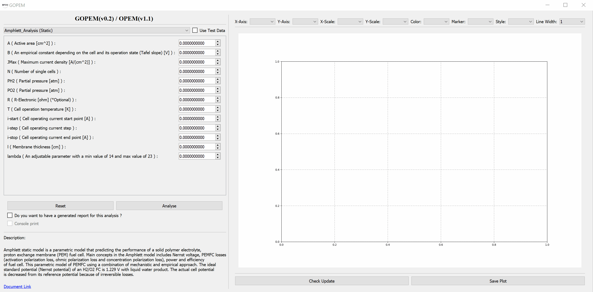
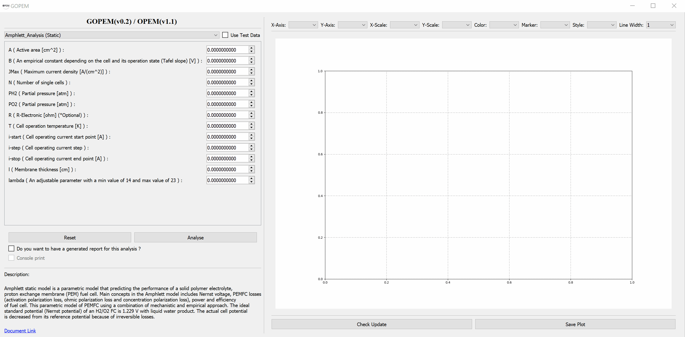

GUI for OPEM library
GUI for OPEM library
version_check.py addedCODE_OF_CONDUCT.md addedISSUE_TEMPLATE.md addedbuild_exe.bat addedbuild_unix.sh addedGOPEM.iss addedCONTRIBUTING.md modifiedREADME.md modifiedWindows fixedInstaller-Version (48.9 MB)
Portable-Version (74.1 MB)
DMG-Version (86 MB)
Source (.Zip) (1.38 MB)
Source (.tar.gz) (1.37 MB)
OPEM libSource (.Zip) (15.6 KB)
Source (.tar.gz) (12.27 KB)